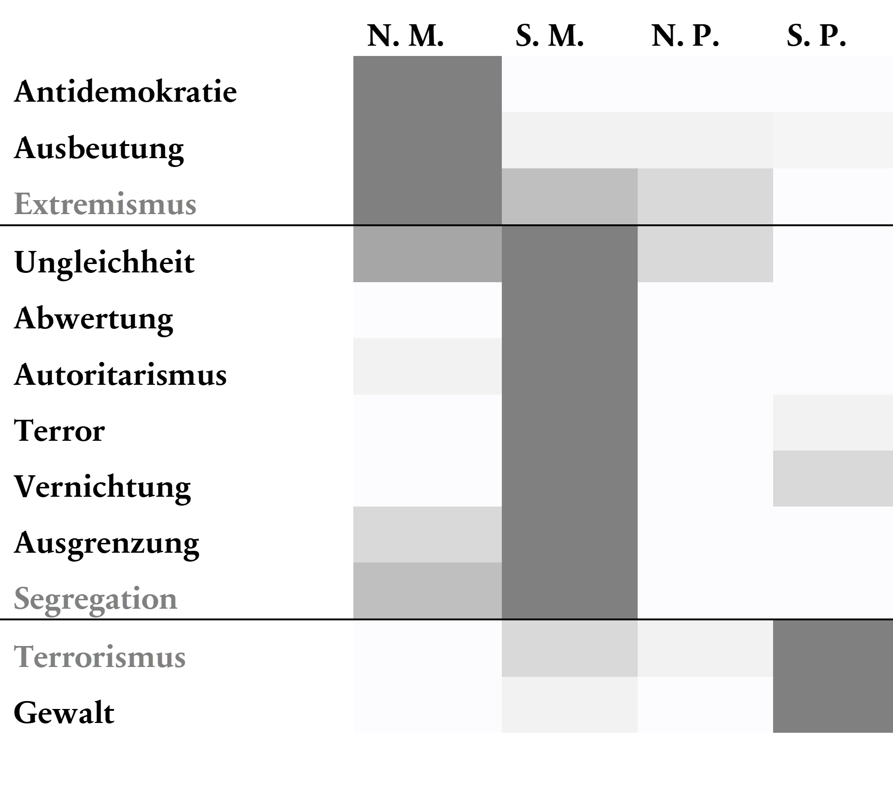

Nachdem die Praktiken der Hybris ohne viel Struktur aufgezählt wurden, ist es nun an der Zeit mit ihnen den Raum zu bevölkern, der im oben beschriebenen ethischen Koordinatensystem von der dunklen Tetrade aufgespannt wird. Die Zuordnung bleibt dabei hypothetisch, eröffnet aber hoffentlich Einblicke in die Ordnung des Raums der Hybris. Die etwas zugespitzte Unterteilung in die Kategorien narzisstischer Machiavellismus, sadistischer Machiavellismus, narzisstische Psychopathie und sadistische Psychopathie soll die Gemeinsamkeiten der Praktiken auf einem hohen Abstraktionsniveau herauszuarbeiten helfen.
In die erste Kategorie werden Praktiken eingeordnet, die sittliche Normen und Werte zumindest äußerlich integrieren und sich durch das Ignorieren des Wohls von Out-groups oder des direkten Gegenübers auszeichnen. In die zweite Kategorie passen Praktiken, die explizit darauf ausgelegt sind, Anderen zu schaden. Die dritte Kategorie ignoriert das Wohl Anderer, hält sich aber, wenn überhaupt, nur an funktionale Normen. Diese Praktiken sind durch die fehlende Legitimation weniger langfristig geplant. In der vierten Kategorie sind schließlich die Praktiken, die Anderen Schaden zufügen sollen, ohne dies zu legitimieren. Eine Tabelle mit der vorgenommenen Zuordnung findet sich in den Anmerkungen. Hier reicht eine Überblicksdarstellung, in der die Intensität der Färbung für eine relativ hohe Anzahl der Praktiken steht. Die Widerstandspraktiken sind dabei durch eine graue Färbung kenntlich gemacht.
Es fällt zunächst ein doppeltes Ungleichgewicht der Kategorien auf. Die Gesellschaft scheint eher durch Machiavellismus ausgezeichnet als durch Psychopathie. Gleichzeitig finden sich mehr sadistische als narzisstische Praktiken. (Das kann natürlich auch auf die unsystematische Auswahl der Praktiken zurückzuführen sein.) Insbesondere die Gewaltpraktiken lassen sich alle eher als sadistisch denn als narzisstisch beschreiben.
Die Einteilung ist schwierig, weil z.B. die Beleidigung zwar eher situativ und mit der Absicht der Verletzung des anderen ausgesprochen wird. Gleichzeitig ist ihr Ziel aber die Selbstaufwertung durch Abwertung des anderen. Man könnte also auch argumentieren, dass der andere nur Mittel zum Zweck ist. Selbst die scheinbar eindeutig sadistisch-psychopathische Schlägerei hat das Element des narzisstischen Thrills. Eine aufwendigere und spannendere Version dieser Karte würde die Vektoren der Praktiken im dunklen Raum aufzeigen.
Nichtsdestotrotz lässt die Zuordnung einige abduktive Schlüsse über die Position von Praktiken der Hybris im ethischen Raum zu. Der erste Blick auf diese krude quantitative Auswertung einer willkürlichen Liste verdeutlicht, dass viel mehr Praktiken machiavellistisch als psychopathisch sind. Nur die Restkategorie der Gewaltpraktiken sowie terroristische, Terror- und Vernichtungspraktiken scheinen eher psychopathisch. Nur Ausbeutungspraktiken finden sich in allen vier konstruierten Kategorien. Diese Verteilung dürfte nicht überraschen, da Abwertung, Ausgrenzung, Autoritarismus, Extremismus, Segregation und Ungleichheitsreproduktionspraktiken Spielarten der kulturellen Gewalt sind. Es sind zum größten Teil Praktiken, die die Gewalt und die Ausbeutung unsichtbar machen sollen.
Die genannten Abwertungs-, Terror-, Vernichtungs-, terroristischen und Gewaltpraktiken habe ich als ausschließlich sadistisch eingeordnet, weil sie immer auf den Schaden von Einzelnen oder Gruppen Zielen. Das Wohl der anderen ist nie nur egal, sondern soll verletzt werden. Die Ausbeutungs- und Ungleichheitsreproduktionspraktiken sind dagegen mehrheitlich narzisstisch. Sie sind nur auf das Selbst ausgerichtet, weil ihnen bereits das Feld geräumt wurde. Ausgrenzung und Autoritarismus sind teils narzisstisch, teils sadistisch. Das verweist auf die Ubiquität dieser Praktiken in allen Lebensbereichen, von Willkommensklassen bis zum Antisemitismus.
Karte des Raums der Hybris
Der Wissensvorrat der modernen Gesellschaft weist eine Unzahl von Praktiken der Hybris auf, die sie zu dem machen, was sie ist. Sie strukturieren einen dunklen Raum, der von Amoralität zu Unmoralität reicht. Ein dunkler Habitus wird erst durch dieses gesellschaftliche Wissen strukturiert. Die Geschichte der school shootings in den Vereinigten Staaten und deren Verbreitung über die Welt ist das beste Beispiel für diese Dynamik. Sie alle finden statt in einem Interpretationsrahmen, der seit Columbine stetig weiterentwickelt wird und Menschenfeindlichkeit, Privilegienerwartungen und die Logik der Prominenz vereint. Während die weitere Bevölkerung entsetzt reagiert, bleiben einige soziale Welten bestehen, die die Praxis des school shootings als coping-Strategie im kollektiven Wissensbestand bewahren. Das diese Online-Communities nicht effektiv bekämpft werden, kann nur als Lernblockade von Politik, Sicherheitsbehörden und Zivilgesellschaft betrachtet werden. Die Praktiken der Hybris müssen in rationalen, kolletiven Lernprozessen durch progressive Problemlösungen ersetzt werden.
Die Soziologisierung der Tetrade hat das Potenzial, uns unserer Verantwortung bewusst zu machen. Solange wir nicht aktiv jede Form der kulturellen Gewalt dekonstruieren und delegitimieren, sind wir Kollaborateure.